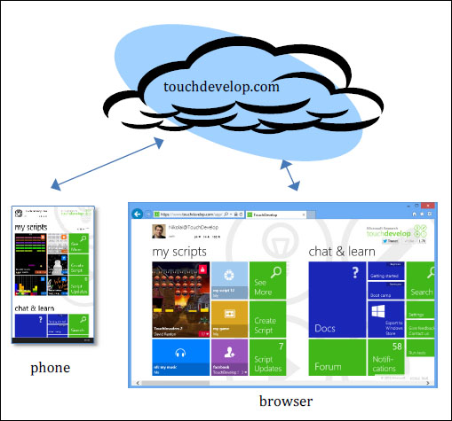
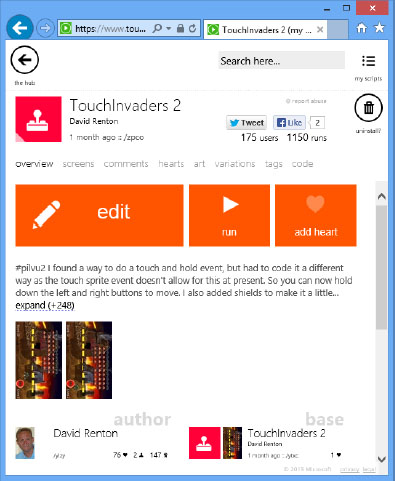

TouchDevelop is a complete app creation ecosystem designed for touch, cloud connected, mobile devices. This chapter provides a brief introduction to the world of TouchDevelop scripting and the devices that support it.
Computers want to be programmed
Computers are everywhere, and they take on many different forms: TVs, smart phones, fridges with apps, etc. Despite this abundance of form and function, until recently, most people thought of desktop PCs and then laptops when they were asked about computers. This perception is shifting, as smartphones and tablets are quickly becoming the main computers for an increasing number of people. As a matter of fact, smartphone sales have surpassed PC sales even faster than some analysts anticipated.
New smartphone and tablet models are getting more powerful and becoming suitable for many tasks that used to require PCs. Mobile devices have become well established tools for reading and composing emails, browsing the web, and playing games. These devices are even being used to annotate documents. And yet, the one task that can be seen as the defining moment of any computing platform is not yet widely performed on smartphones and tablets: writing code, or even creating entire applications.
The previous generation of people who grew up with full featured PCs always had the option to program them. While most people chose not to do that, they at least had the option. Decades of programming language and development environment research produced powerful tools suitable for PCs. It is through exploring this opportunity that many young people became interested in computer science.
Unfortunately, in the new world of apps and app marketplaces with a focus on existing curated content, it seems that the creative outlet of programming that encouraged aspiring programmers in the past is no longer easily accessible. The ability to program on the very device one owns and uses all the time is not a prominent option anymore.
Granted, smartphones and tablets pose new challenges for programming tasks. These devices have no physical keyboard, the screen tends to be rather small, and data tends to not be stored locally but is dynamically fetched from the cloud. A group at Microsoft Research asked the question: “Is it possible to create interesting apps directly on a smartphone, without using a separate PC or a keyboard?” It is in the attempt to answer this question that TouchDevelop was born.
The TouchDevelop team took on the challenge of rethinking computer programming from the ground up, trying to understand how a modern mobile touch-screen device should be programmed in its own right. TouchDevelop was created with a goal to ignore the legacy of programming languages optimized for linear text input via a keyboard, often having a verbosity that assumes big screens.
We believe that as more people adopt mobile devices as their primary, or possibly only, computing devices, it will become more important to not just enable users to consume content but to also empower them to produce content. We particularly believe in empowering users to produce new applications.
What is TouchDevelop?
TouchDevelop is a novel application development environment that allows anyone to script their mobile devices anywhere. It does not need a separate PC and can be used by students, hobbyists, power users, and developers. Through TouchDevelop, users can create scripts (i.e., apps written using TouchDevelop) to access data, media, and sensors on a smart phone, tablet or PC. The scripts can also interact with the cloud services for storage, computing, and social networks. TouchDevelop applications can serve many purposes and are typically written for fun, for personalizing the phone, and for creating productivity tools.
TouchDevelop brings the excitement of the first programmable personal computers to the now ubiquitous mobile devices. Scripts developed using TouchDevelop allow users to show and manipulate music and pictures stored on their own mobile devices, to use the device’s sensors, and to interact with friends in their social networks.
TouchDevelop can be used to develop games such as “missile defense”, which is a full featured game where cities must be defended against incoming missiles (
https://www.touchdevelop.com/zvpj
). The script for this sample game can be downloaded to the TouchDevelop application installed on a Windows Phone or directly from the TouchDevelop web application. The user has full access to the script and can modify the game in any way imaginable. If someone has made improvements to the game, the improved game can be shared with others. It is as simple as tapping a button to upload the changed script back to the website. The script will be assigned a different identification tag (replacing the /zvpj letters at the end of the URL). If the author of missile defense publishes an update, TouchDevelop will automatically redirect the user to the latest version of that game.
An example of a TouchDevelop script being used for productivity is the “my online meetings” script, which finds active online meetings. If there is one, it can be joined through the Microsoft Lync application installed on the phone (
https://www.touchdevelop.com/mpuj
).
The TouchDevelop website provides a variety of scripts that can be used for learning or as examples. Sample scripts meant to illustrate how to use the built-in APIs can be found at the URL
https://www.touchdevelop.com/pboj
. Scripts written by other users can be found by going to the TouchDevelop URL
https://www.touchdevelop.com/search
and entering a term like ‘game’ into the search box. Alternatively one can explore the on-line API manual at
https://www.touchdevelop.com/doc/api
.
The TouchDevelop ecosystem
A script developed using the TouchDevelop editor can be shared with other users by using the TouchDevelop cloud infrastructure at
https://www.touchdevelop.com
.
Figure 1-1 gives a high level architectural overview of the TouchDevelop ecosystem: regardless of whether a phone or browser client is used, all information such as scripts is retrieved and stored in the touchdevelop.com cloud service.

Figure 1-1
The TouchDevelop ecosystem
TouchDevelop scripts are developed by users on their devices and executed within the TouchDevelop run time environment. These scripts can be shared with other users. The TouchDevelop cloud infrastructure supports this sharing amongst a community of TouchDevelop users. These scripts can also be searched, viewed, and installed into a user’s account using the TouchDevelop website. The cloud infrastructure enables sharing, and, acts as a repository of all scripts developed and published by users.
The TouchDevelop website allocates a unique deep link for each script on
http://touchdevelop.com
; where each script is identified by a seemingly random letter sequence. For example,
https://www.touchdevelop.com/zpco
refers to a particular version of the TouchInvaders game, as in Figure 1-2. It can be used to open the script directly. This link can be shared with other people or on social networks.

Figure 1-2
Viewing metadata of a script
If a user likes this script, he or she can show their appreciation of a script or a comment by giving it a positive review in the form of a “heart”.
On any client, a phone or a web browser, the user can edit a script as shown in Figure 1-3.
Figure 1-3
Editing a script
History and Future
After releasing TouchDevelop in April of 2011, first exclusively available for Windows Phone, the overwhelming response surprised us. Since then, more than 300,000 people downloaded the app. At first, TouchDevelop was limited to creating scripts on the device where it was installed – there was no way to share scripts with other people.
In August 2011, the update to v2.0 of TouchDevelop brought sharing of scripts via the touchdevelop.com cloud service. The update also enabled many more social features such as reviewing scripts, writing comments, taking screenshots, etc. Since then, more than 90,000 people registered online and shared more than 25,000 scripts, most of them written entirely on phones. Many features were added over time, making TouchDevelop an increasingly powerful development environment and language. The features include support for libraries for code reuse and custom structured data types.
In order to share scripts not only within the TouchDevelop environment, but also with other people who might not be aware of TouchDevelop, we added the ability to export scripts as apps that can be submitted to the Windows Phone Store. This capability has existed since March of 2012.
In October 2012, TouchDevelop took a giant step forward. Thanks to a complete re-implementation, TouchDevelop could now run not just on Windows Phones, but on virtually any modern device in a browser as a Web App. The supported platforms include PC, Mac, iPhone, iPad, iPod Touch, and Android. The new TouchDevelop implementation harnesses the power of HTML5 and JavaScript, while still using the same programming language as before. The code editor dynamically adjusts to the screen size to accommodate small screens on smartphones, medium-sized screens on tablets, and large screens on PCs. The user interface of the Web App has again been optimized for touchscreens, but a keyboard and a mouse can also be used if desired and available. At the same time, we also added the ability to export scripts as apps that can be submitted to the Windows Store (which is a separate concern from the Windows Phone Store).
In the near future, the update v3.0 of the TouchDevelop app for Windows Phone will bring the same editing and execution engine that currently powers the TouchDevelop Web App to Windows Phone 8 devices.
A significant upcoming addition to the TouchDevelop programming language will be the concept of “cloud state.” By just tagging a variable as “cloud”, similar to how one marks a variable as “static” in C#, an app is turned into a distributed app with shared state. All changes to that variable will get automatically synchronized between different devices and users.
Platforms
There are a number of optional sensors for Windows Phones. “Near field communication” (NFC), front camera, rear camera, magnetometer and gyroscope may or may not be present in any given device model. Similarly, some browsers choose to expose certain sensors while others don’t. Safari on iOS exposes the accelerometer; Chrome on Android only partially, and Internet Explorer 10 not at all. This variety is most likely an artifact of the continuously evolving HTML5 standard; so, hopefully, more and more sensors will be supported by all browsers as time goes by.
Depending on these constraints, and depending on whether you are running the native TouchDevelop app on Windows Phone or the Web App in the browser, different feature sets are available to you when you write your scripts. See
https://www.touchdevelop.com/platforms
for a complete and up-to-date overview of the different platform capabilities.
Installing TouchDevelop on a Windows phone
If TouchDevelop is to be used for the first time on a Windows Phone, it will need to be installed. To install the app, follow these steps:
1.
Tap the Store tile on the Windows phone.
2.
Press the search icon at the bottom of the screen, and type the text ‘touchdevelop’ into the Store Search text box. Before you finish typing all the letters, the TouchDevelop app should appear as a choice on the screen.
3.
Tap that choice to select it.
4.
Tap Install.
If your device is running a Windows Phone 7 or 7.5 or 7.8 operating system, then you will get TouchDevelop v2.0, which uses a slightly different user interface that does not match the screenshots in this book, and its language is a subset what is discussed in this book.
If your device is running Windows Phone 8, then you will get TouchDevelop v3.0, which resembles the Web App at
https://www.touchdevelop.com/app
, but it exposes many more sensors and data providers available on the phone.
Running TouchDevelop on other platforms
On all other platforms, TouchDevelop does not come as an app in a marketplace, but instead as a Web App. You can run it from your web browser:
2.
Log in. You will be taken to the Web App.
The scripting language
TouchDevelop is a language for writing mobile apps. The TouchDevelop Windows Phone application and the web app also provide a runtime environment for executing TouchDevelop scripts.
The TouchDevelop language is a typed, structured programming language built around the idea of only using touch to author code. It has built-in primitives that make it easy to access the rich sensor data available on a mobile device. The TouchDevelop language mixes imperative, object-oriented, and functional features. The imperative parts are the most visible: users can update local variables, and the states of global objects. Object-orientation is dictated by auto completion requirements – properties of objects are an easily accessible and intuitive concept. However, for the sake of simplicity, the language does not provide the ability to define new types which are subtypes of other types.
A TouchDevelop script consists of a number of actions (functions or procedures), events (actions to be performed when an external event occurs), definitions of tables and record types, global state (global variables and read-only data) and library references (references to other scripts). The language is covered in some depth in Chapter 2.
The TouchDevelop script editor is part of the TouchDevelop application. It is designed for efficient entry of scripts using only the touchscreen. TouchDevelop scripts execute within the TouchDevelop application. The mode of execution is entirely reactive - actions are run in response to events. Events can be raised by user input (e.g., interacting with a UI element, changing the orientation of the phone, or shaking it), events from the phone (e.g., change of active song in the song player) or passage of time. TouchDevelop uses cooperative multi-threading. Actions and events are executed in a single-threaded manner.